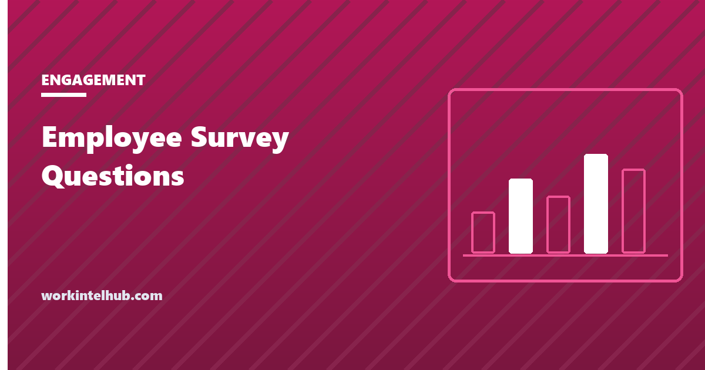

Employee Survey Questions

An employee survey is a set of statements employees rate anonymously so the organisation can see what it cannot see from the top: whether people have what they need, whether managers are doing the job, whether anyone is planning to leave. The questions decide whether the results mean anything. A statement that asks two things at once, a scale that changes halfway through, a question that nobody can act on, and the survey becomes a ritual that produces a number and no change, which is the state most employee surveys are in.
The builder below assembles a survey from forty-five tested questions across seven types. The rest of the page covers the question-writing rules, the survey types and when to use each, how to run it so response rates hold, and the part that matters most, which is what happens in the thirty days after it closes.
Employee survey builder
Nothing typed here leaves your browser. Every closed question is a single statement rated on one scale, which is what makes results comparable across teams and over time.
Writing questions that produce usable data
- One idea per statement. "My manager gives me feedback and supports my growth" cannot be rated; someone whose manager does one and not the other has no answer. Split it.
- Statements, not questions, on one scale. "I have the tools I need to do my job well", rated 1 to 5, is comparable across teams and years. "How do you feel about your tools?" is not.
- Concrete and recent. "In the last seven days I have received recognition for good work" measures something; "I feel valued" measures mood. The Gallup Q12 items are the model here: every one describes an observable condition.
- Actionable by someone. Before including a statement, name who would act on a low score. If nobody would, cut it.
- Neutral wording. "The company cares about my wellbeing" leads less than "Leadership genuinely cares about my wellbeing"; drop the adverbs.
- Short. Eight to twelve statements for a quarterly survey, three to five for a pulse. Response rates fall past about ten minutes.
- One open question, at the end. "The one thing we could change that would make the biggest difference" produces the most useful sentence in the whole survey and is where the specific complaints live.
- The same core every time. Trend is the point. Change the peripheral questions; keep the six or eight core statements identical year to year.
The seven survey types
| Survey | When | Length | What it tells you |
|---|---|---|---|
| Job satisfaction | Annually or twice a year | 8 to 12 | Pay, workload, tools, expectations, intent to stay |
| Engagement | Annually, with pulses between | 8 to 12 | Recognition, development, manager relationship, meaning; the engagement survey questions page goes deeper |
| Manager effectiveness | Annually, reported to each manager | 6 to 8 | Feedback, clarity, fairness, growth, safety to raise problems |
| Wellbeing and belonging | Annually or after a period of strain | 6 | Stress, ability to disconnect, belonging; see the burnout statistics |
| Weekly pulse | Weekly or fortnightly | 3 to 5 | Blockers and mood now; managers act within days |
| Onboarding check | Day 30, and again at 90 | 6 to 7 | Whether the onboarding worked; predicts early turnover |
| Exit | Last week | 6 open questions | Why people leave; pairs with the exit interview and the stay interview that should have come first |
The 0-to-10 recommend question ("I would recommend this company as a good place to work") produces the employee net promoter score, which the eNPS glossary entry defines. It is a useful single trend line and a poor diagnostic on its own, which is why it sits inside the satisfaction survey rather than replacing it.
Running it so people answer
- Anonymous, and provably so. A third-party tool or a form with no identifying fields, results reported only for groups of five or more, and a plain statement of both. The first survey after a confidentiality breach gets a 30 per cent response rate for years.
- Two weeks open, three reminders, from the manager. Response rates above 70 per cent are achievable; below 50 per cent the results describe the people who answer.
- Working time, and for shift and floor staff, a device. A survey that can only be completed on a personal phone off shift is a survey of office staff.
- Tell people the last survey's outcome before opening the next. "You said, we did" in the invitation is the single strongest driver of response.
- No demographics that identify. Team, tenure band and location are enough; a team of four with an age band is a name.
The thirty days after
The survey's value is decided after it closes. Results go to every manager for their own team within two weeks, with the company figures alongside. Each manager holds one conversation with their team about the two lowest scores, not to explain them but to ask what would move them, and commits to one action. Leadership does the same for the company-wide results and publishes the actions, with owners and dates, within thirty days. The next survey asks whether the actions happened.
The failure mode is the opposite sequence: results held at the top, a summary deck with the good news, and a working group. Employees notice, and the next response rate records that they noticed. The recognition and retention guides are where the actions usually come from, and the HR metrics page is where the survey scores sit next to the turnover they predict.
Key takeaways
- One idea per statement, rated on one scale, concrete and recent, actionable by a named person, neutrally worded, eight to twelve items, one open question at the end.
- Seven survey types: satisfaction, engagement, manager effectiveness, wellbeing, weekly pulse, onboarding check and exit. Keep the core statements identical over time.
- Anonymity that is provable, results only for groups of five or more, two weeks open with manager reminders, and completion on working time for floor staff.
- Tell people what happened after the last survey before opening the next one.
- Within thirty days: results to every manager, one team conversation on the two lowest scores, one action each, and published company actions with owners and dates.
Frequently asked questions
What are good employee survey questions?
Single statements describing an observable condition, rated on one scale: 'I have the tools I need to do my job well', 'In the last seven days I have received recognition for good work', 'I can raise a problem with my manager without fear', 'I would recommend this company as a good place to work'. The builder on this page holds forty-five across seven survey types.
How many questions should an employee survey have?
Eight to twelve rated statements plus one open question for an annual or quarterly survey, which takes under ten minutes. Three to five for a weekly pulse. Six to seven for an onboarding check. Response rates fall as length passes about ten minutes, and the results become a survey of the patient.
What is the difference between an engagement survey and a satisfaction survey?
Satisfaction asks whether people are content with the job's conditions: pay, workload, tools, expectations. Engagement asks whether they are invested in the work: recognition, development, relationship with the manager, meaning, and whether their opinions count. Satisfied employees may not be engaged; engaged employees are usually satisfied. Most organisations run both in one instrument.
Should employee surveys be anonymous?
Yes, and provably: a third-party tool or a form without identifying fields, results reported only for groups of five or more, and a plain statement of both in the invitation. Demographic questions should be limited to team, tenure band and location. Honest answers to manager and pay questions depend on it.
How often should you survey employees?
A full satisfaction or engagement survey once or twice a year, a short pulse weekly or fortnightly for teams that will act on it, an onboarding check at 30 and 90 days, and an exit survey in the last week. More frequent full surveys without visible action in between reduce response rates.
What should happen after an employee survey?
Results to every manager for their own team within two weeks; one team conversation about the two lowest scores asking what would move them; one committed action per team; company-wide actions with owners and dates published within thirty days; and the next survey asking whether those actions happened. Surveys without visible action lower the next response rate.